Cervolix 2006
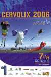
Cervolix, grand festival annuel sur le magnifique site du plateau de Gergovie, tout le monde sait où c'est, Gergovie (pas Alésia...). On promet de la voltige, des montgolfières, etc. La météo du vent est toujours capricieuse là-bas, mais on trouve toujours des moments favorables. Par exemple, le dimanche, on se lève avec Force 7, et le soir, il y a 0 : même mon Harfang indoor ne voudra pas prendre l'air !
Cette année, gros changement : un grand barnum sur le site abritera le repas du samedi soir. Pour les camping-caristes, plus de descente affolée à la recherche du restaurant perdu, et plus de remontée... chargée, plus de renoncement au repas, surtout. Même pour ceux qui logent à l'hôtel, ça simplifie un peu : un seul trajet au lieu de deux... Dommage qu'on ne puisse pas y amener son plateau le dimanche, on se fait virer (quand on se fait prendre...)!

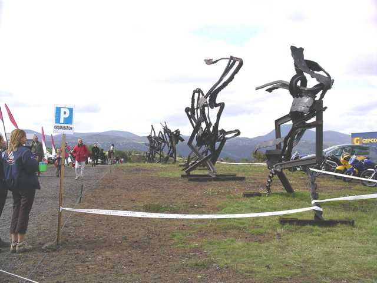
A l'arrivée sur le site, un autre changement, les "sculptures" qui "ornent" le haut du plateau et qui se voient de loin. Bien commodes pour attacher les cerfs-volants...

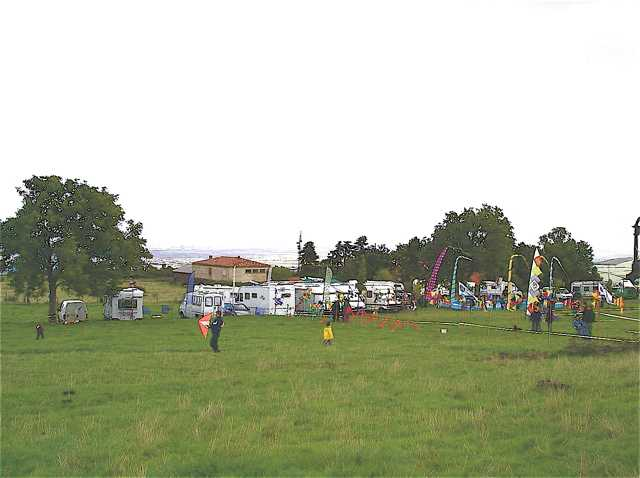
Les campings-caristes sont déjà nombreux sur le bas du terrain, mais aussi sur la place du Casque et sur le parking du haut. Il y a même des non-cervolistes qui sont venus par hasard passer un week-end au calme. Mal tombés !

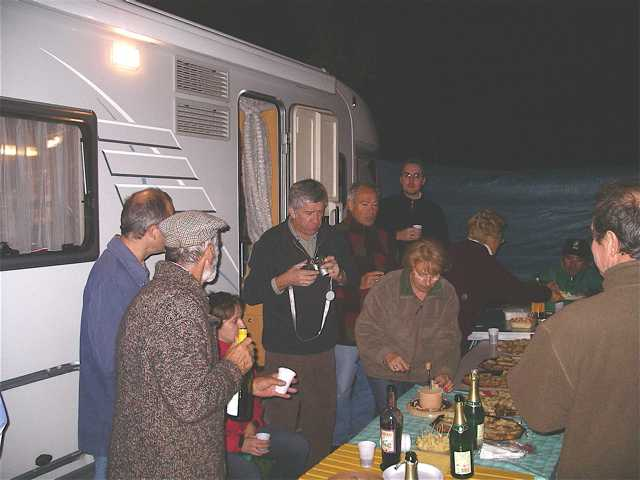
C'est l'anniversaire de Jean-Pierre. Avec le concours de quelques participants, ils ont préparé un pot qui en fait est un repas du soir, et raffiné, et abondant ! A tel point que Richard ne pourra placer son omelette aux rosés des prés ramassés sur place, et la reportera au surlendemain !

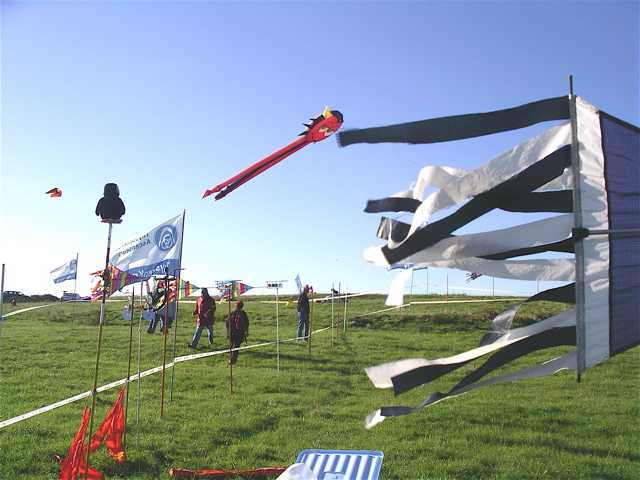
Samedi tôt : déjà quelques cerfs-volants, et François a monté ses moulinets !

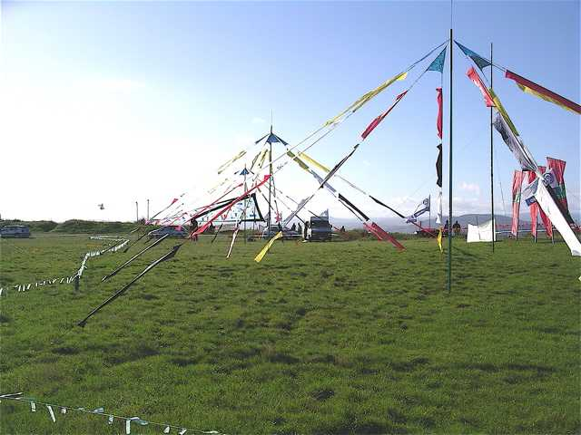
Michel Tournier a monté ses mâts multicolores et ses animations...

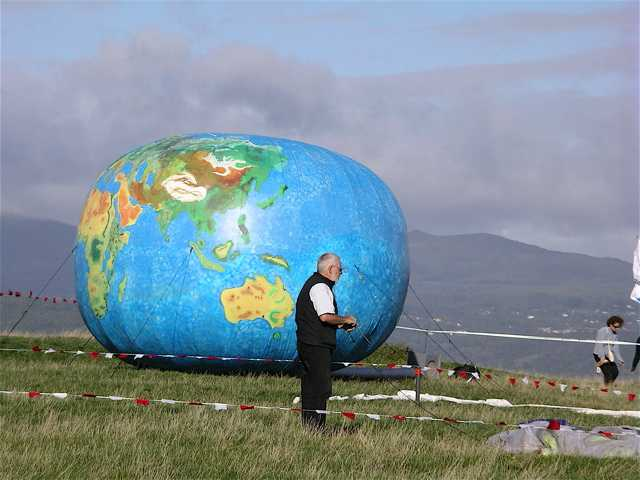
Par exemple le "globe" terrestre qui illustre bien l'aplatissement aux pôles pour l'affirmation duquel les géographes se sont confrontés il y a 2 siècles !

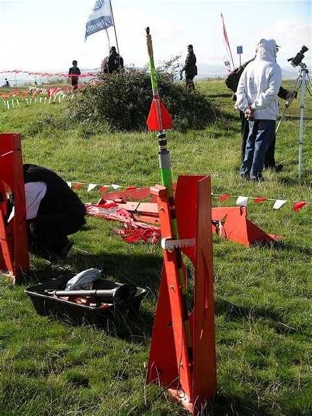
Ou encore le lancement des fusées à air comprimé vers la Lune gonflée au compresseur, à une quinzaine de mètres plus loin...

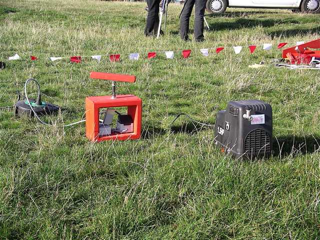
Pour les plus costauds, il faut pomper avec une pompe à pneus d'autos, ça stimule la course à la hauteur ! Pour les autres, Michel a prévu un compresseur, avec un déclencheur d'aspect guerrier !

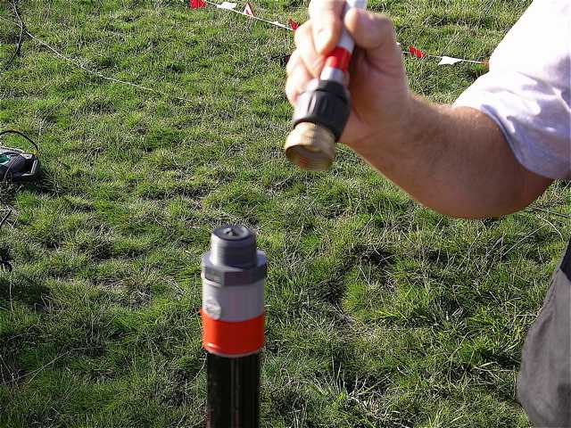
L'air comprimé est retenu par un diaphragme plus ou moins résistant et consommable. Quand il finit par éclater, la fusée part, très haut... et retombe dans la Lune... si on a bien visé (...avec la crémaillere) !

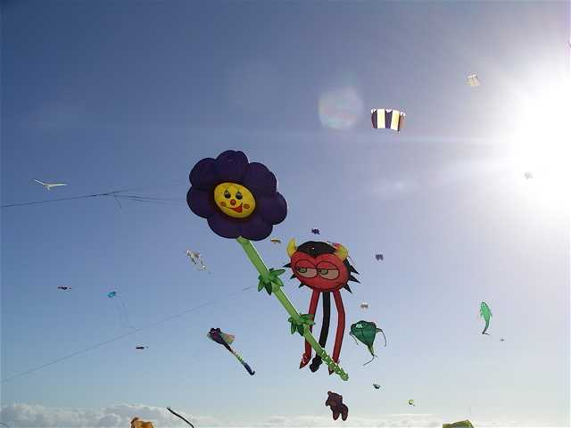
Jos est venu, avec ses splendides marguerites et bien d'autres CVs !

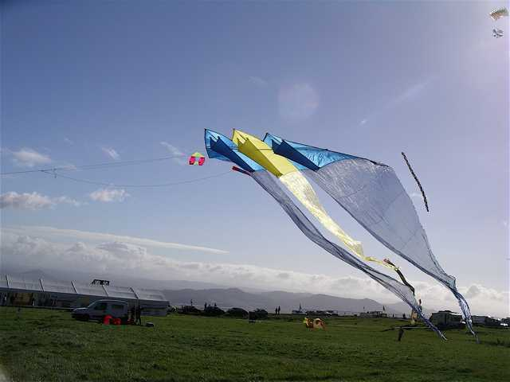
Une innovation, le tri-delta, qui ne vole pas mal.

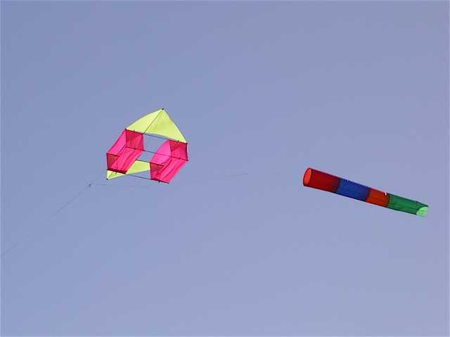
Et un CV comme celui du logo CVCF, dont personne ne sait le nom ! Mais avec une queue anachronique qui n'ajoute rien !

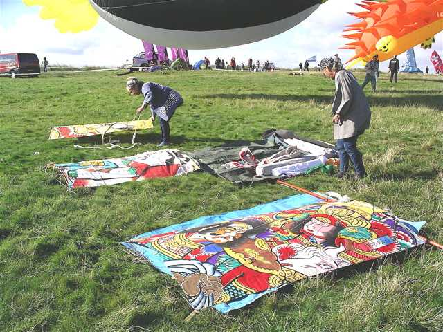
Il y a aussi des Japonais, Makoto Oe et un autre plus ancien, avec de magnifiques Edos peints !

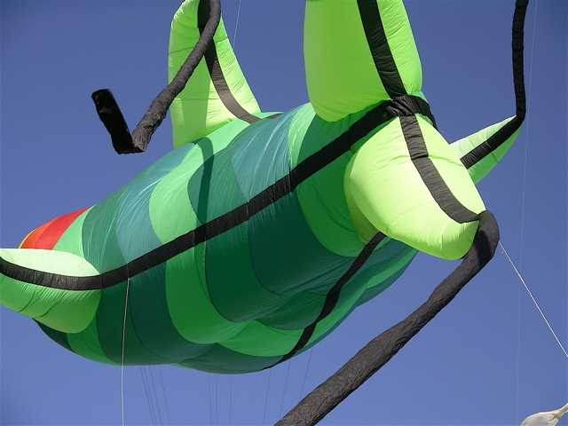
La tribu Awita est aussi présente et mettra plein de choses en l'air, le poisson vert...

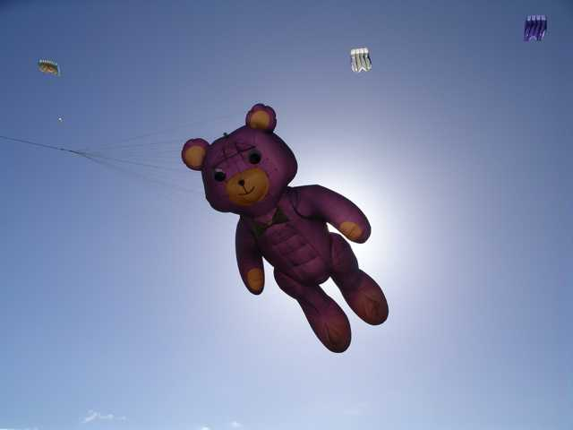
...le nounours, qui cache bien le soleil ! Ou beaucoup de deltas...

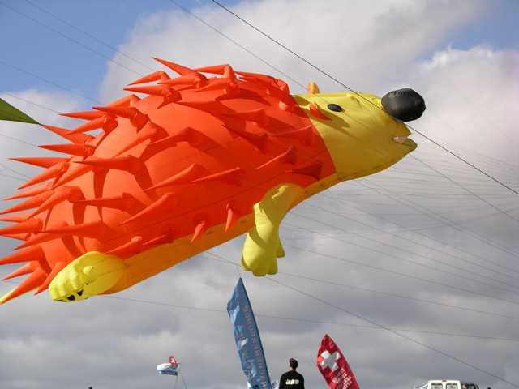
Je n'ai jamais vu le hérisson voler si haut et avec les piquants si roides !

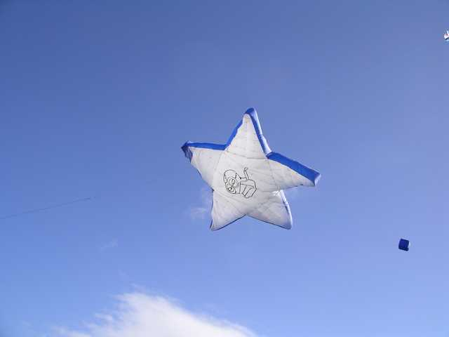
Cette splendide étoile, qui se passerait bien du logo central, a une taille que vous n'imaginez pas...

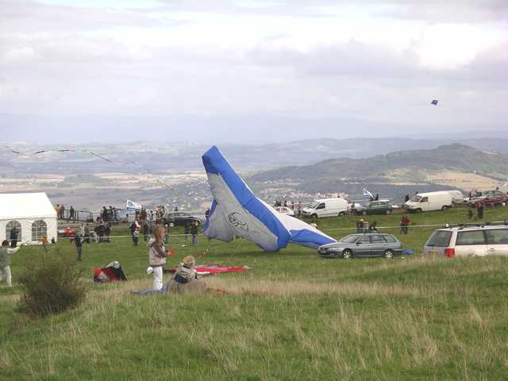
La voilà au sol, à côté d'une voiture, pour vous donner une idée !...

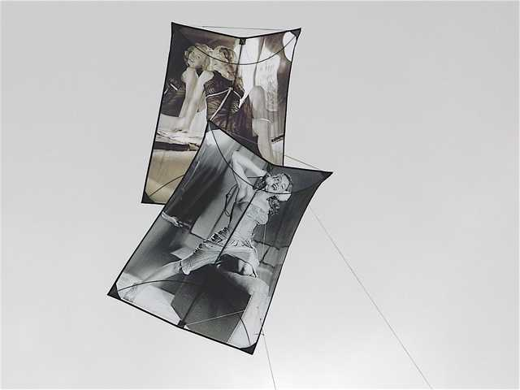
Intéressants, ces cerfs-volants en spi imprimés de gentes demoiselles ! L'auteur (espagnol) m'a dit que c'était imprimé mais que ça ne craignait pas l'eau ni rien mais je n'ai pas d'autres détails. Il en a aussi en couleur. Ca ouvre la voie à des réalisations intéressantes...

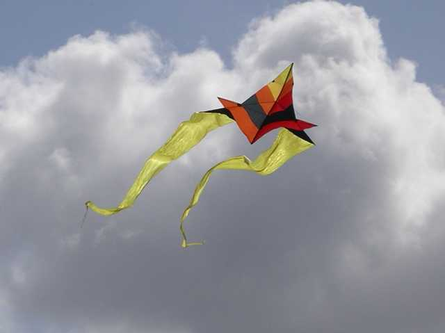
Cette fibule reprend celles de Michel Gressier, dans une taille plus raisonnable... Elle est aussi un peu moins bien tendue, mais vole quand même bien, ça change des sempiternels pyrodeltas !

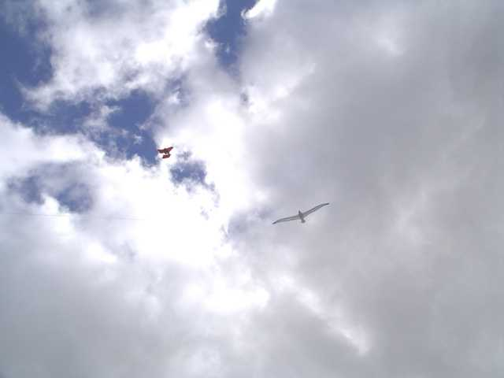
Pour sortir des turbulences, j'ai lâché un peu de fil à mon Albatros 2, en compagnie d'un grand Cody très stable !

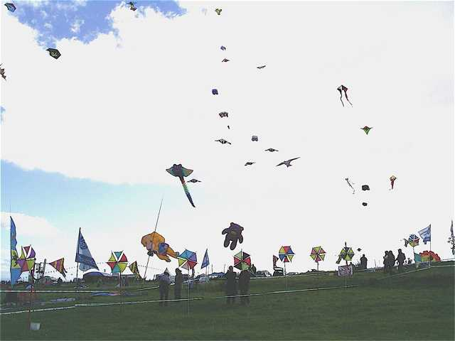
Sur un fond de ciel éblouissant, au bout des moulins de François, Joël a monté les siens avec la zizique habituelle !

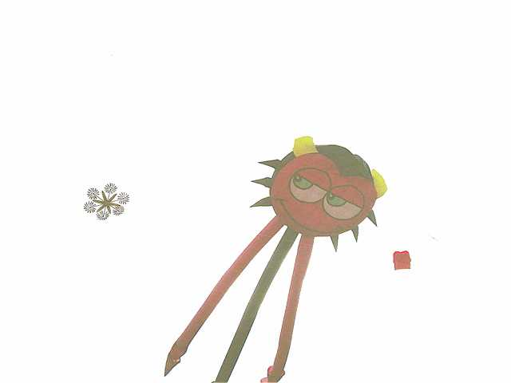
Il a aussi fait voler son 1er Prix de Dieppe, en gaine de bambou, balsa et plumes de pintades !

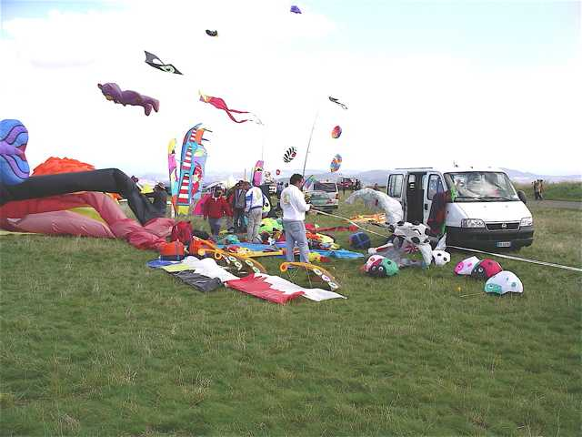
Au hasard des terrains, grand déballage de spi en tout genre...

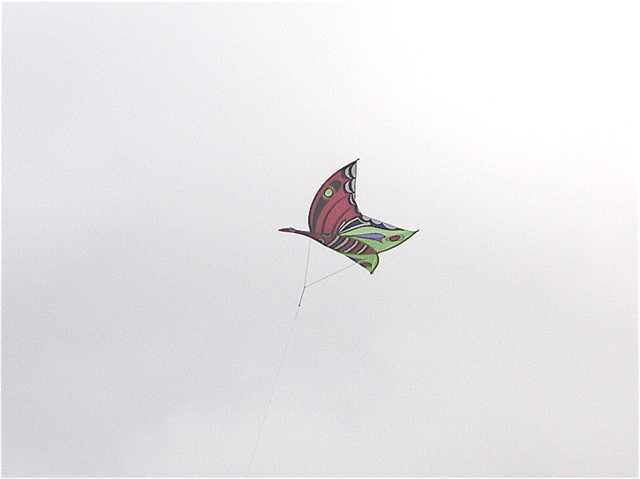
Et un beau papillon, à la structure différente de ceux que l'on voit habituellement !

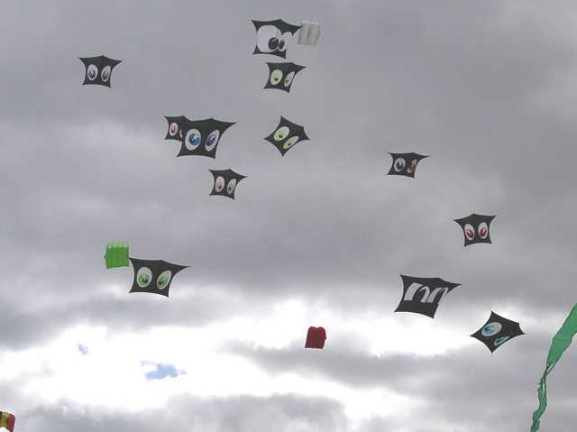
L'équipe italienne a sorti ses pentagones aux yeux tous semblables, mais différents...

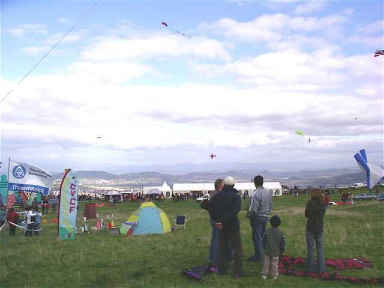
Autour du plateau, course d'avions racers qui se doublent et se redoublent à ras du sol (voire plus bas, ce n'est pas si difficile ici !). Ils sont très fins et très beaux (et très rapides !).

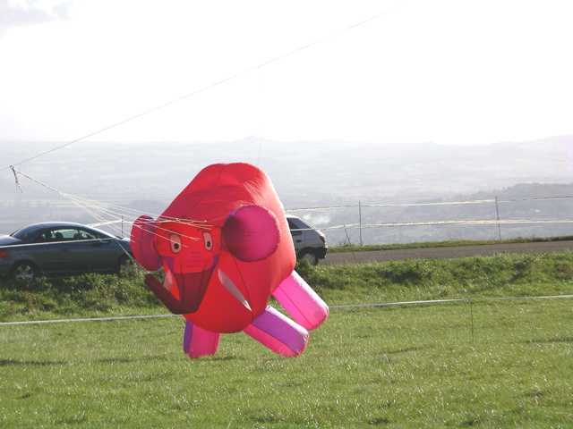
Et ce malheureux éléphant rose a bien du mal à se tenir sur ses pattes !

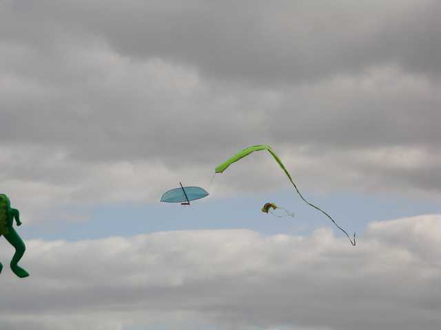
Dans les cerfs-volants exotiques, ce Wau avec un sifflet supérieur. Malgré sa queue, il vole souvent (mais pas longtemps) sur le dos...

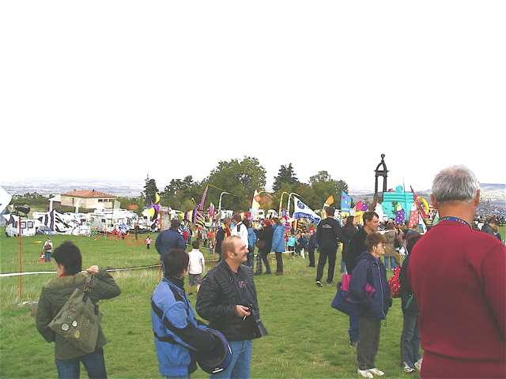
Beaucoup de public qui monte par l'allée centrale, avec cette météo assez favorable à une sortie, surtout que les buvettes-restaurants ne manquent pas, en haut, en bas, sur le côté...

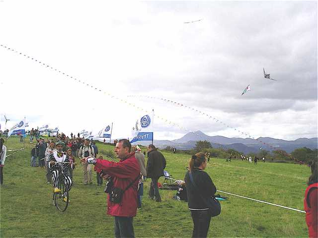
Et il y en a autant qui descendent par la même allée ! Gaby a du mal à se frayer un passage... Et il y a à regarder, comme ces immenses arches !

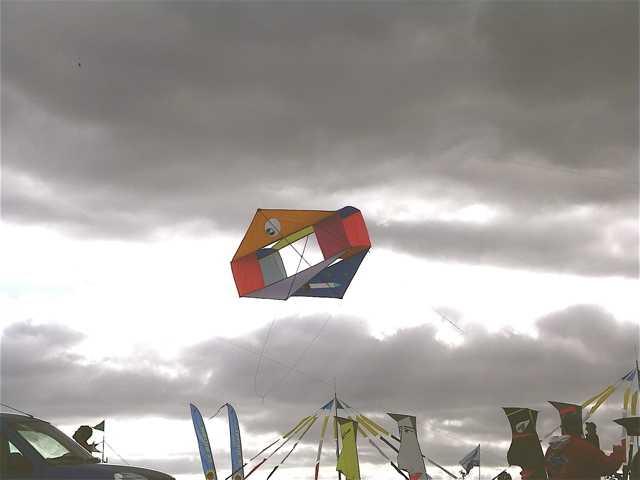
Des cerfs-volants que je ne connais pas, comme ce "XBox" très allongé...

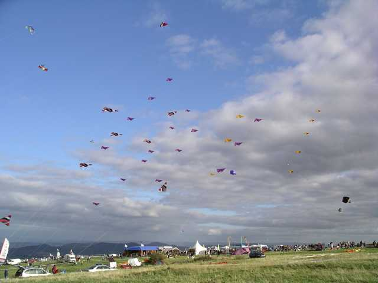
Par contre, les deltas innombrables des AWITA sont des classiques des rendez-vous comme d'habitude... Mais le vent de dimanche en cassera quelques-uns !

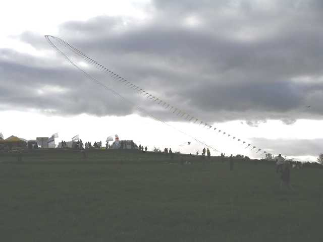
On verra aussi plusieurs arches se déployer, mais celle-ci est vraiment impressionnante !

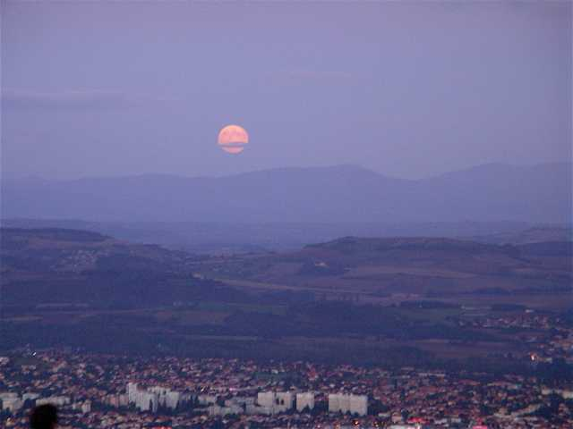
Mais on vole, on vole, et la lune se lève !

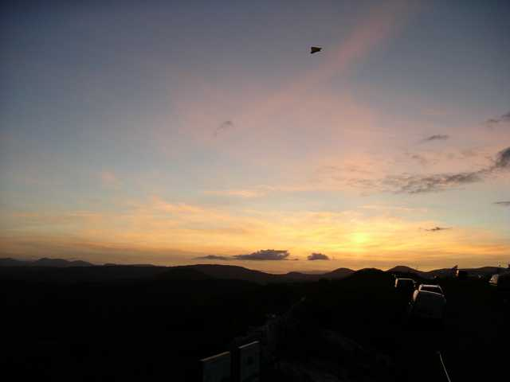
De l'autre bord, le soleil se couche, il est temps de changer d'activité !

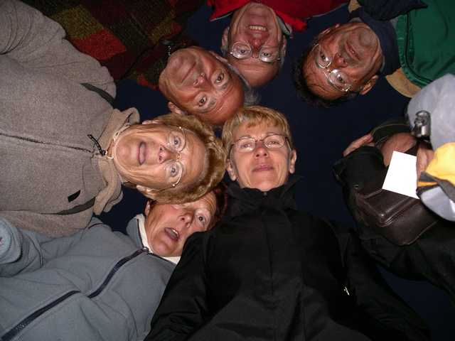
Vous avez deviné, on fait la queue pour le repas de fête du samedi soir, autant s'occuper, alors on pose !

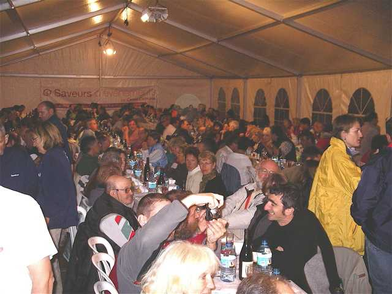
Et on peut se rendre à pied sous le magnifique barnum, bien rempli, déjà, et on sera servis à table, quel luxe !

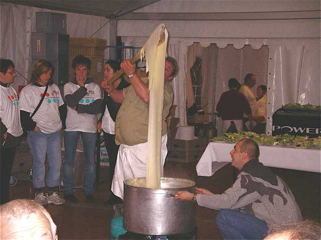
Au menu, aligot et saucisse, d'auvergne bien sûr. Pour préparer l'aligot, il faut de la purée, du fromage et... de l'huile de coude !

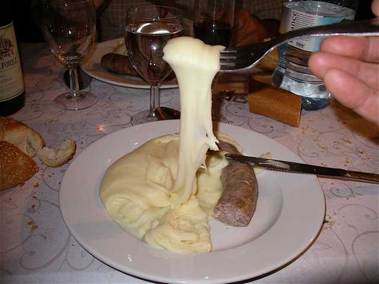
Voilà le résultat dans l'assiette, appétissant, après une journée en plein air et les montées-descentes continuelles !

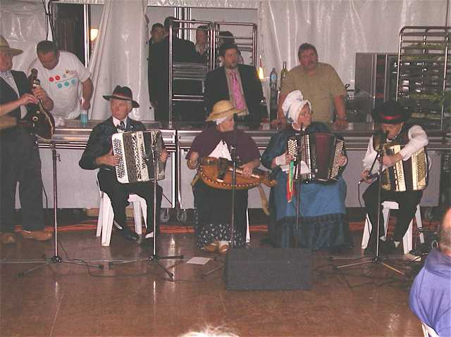
Un petit groupe vient agrémenter le dessert : orchestre avec cabrette (sorte de cornemuse avec soufflet sous le bras droit), vielle et accordéons... Ils viennent de Romagnat, qui a bien du mérite de produire un groupe de cette qualité, bravo !

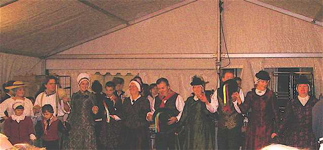
Il y a aussi une douzaine de danseurs et une présentatrice, tous en costume traditionnel, de campagne ou de ville. Ils ont tous l'air de beaucoup s'amuser !

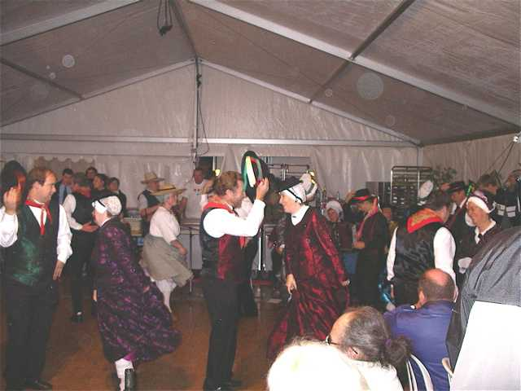
Et bien sûr, bourrées et rigodons, qui se terminent toujours par une bise derrière le chapeau !

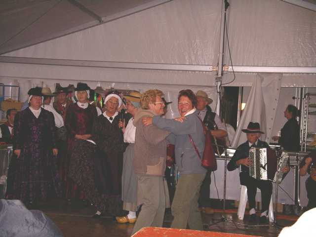
Il y a même des girls qui viennent compléter la troupe, toujours avec le sourire !

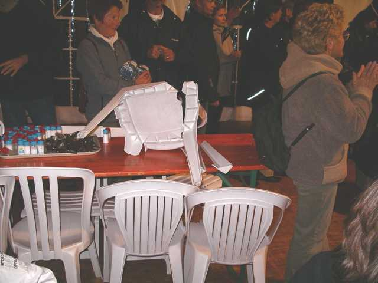
Michel Tournier n'est pas filiforme, mais il n'est pas non plus obèse. Pourtant, à force de s'agiter, il a explosé sa chaise (sans bobos, rassurez-vous)...

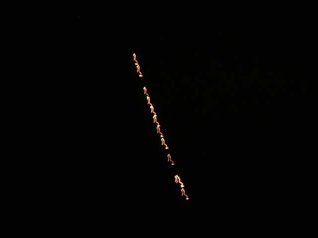
En concurrence avec le groupe musical (dommage), vol de nuit, mais sans projecteur, sans rien. On voit seulement quelques guirlandes de lampions... mais j'ai raté des choses : mini-montgolfière d'artifice, montgolfières en papier, etc...

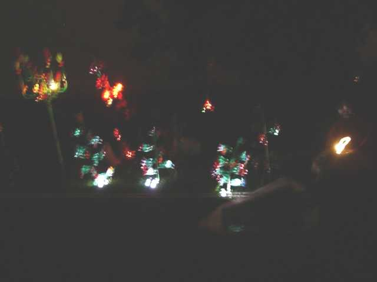
Et, bien sûr, les incontournables cactus lumineux de Fernando. Il a ajouté cette année des cactus courbes, et pour Cervolix, des projecteurs à LEDs placés au sol...

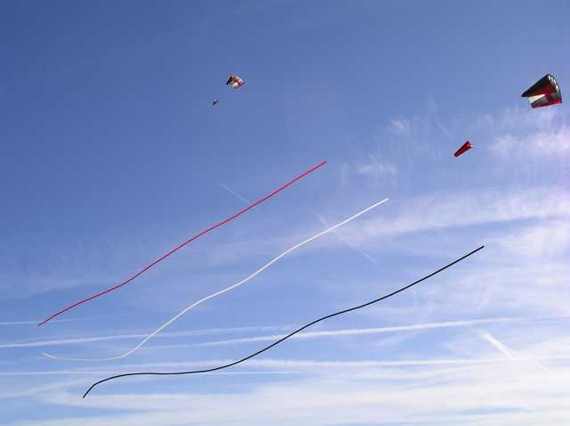
Le dimanche matin, Force 7 ! Mais il y a quand même des courageux qui ont mis en l'air un Sled à poches, plus tard agrémenté de longues queues tubulaires, vraiment très longues...

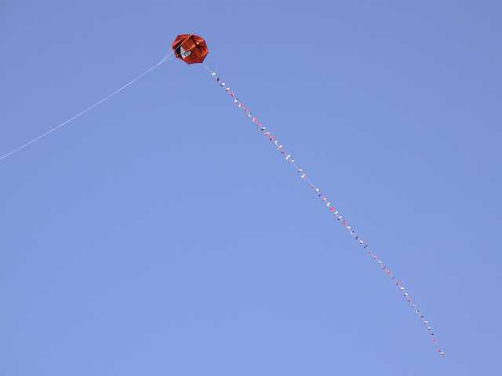
Les Pétillon résistent bien aussi au vent fort. Il suffit de rajouter des queues jusqu'à ce qu'ils ne bougent plus !

Plus tard, le vent ayant baissé, remontent toutes sortes de cerfs-volants comme celui-ci qu'on pourrait qualifier de Circoflex à bride trop courte, et d'autant plus resserré de derrière pour compenser la fermeture avant...

Mais un grand, un énorme soleil s'est levé au sud !

Un flow-form bien coloré lui fait pendant...

Pendant ce temps dans les fonds de vallées protégés du vent, le brouillard reste accumulé très tard...

Cette petite grue qui traîne un tapis a l'air chinoise, mais c'est un européen qui la fait voler...

Jacquot a sorti un CV peu toilé qui résiste bien a fort vent, mais pas au faible !

Et cette sorte de carré très déformé, qui reste en vol grâce à ses queues, offre une belle alliance de couleur...

Le capitaine Pic a installé sa piscine pour la plus grande joie des enfants. Mais c'est bien lourd à transporter, à monter, à remplir, à vider, à démonter, à recharger, tout ça pour deux jours... (presque 3, car il vient la veille).

Le CVCF a monté un petit vol de coccinelles. Malgré le grand nombre d'absents, on a pu voler à neuf simultanées...

Et les arches remontent, plusieurs aujourd'hui, je n'ai pas eu le courage de compter les cerfs-volants, mais c'est énorme, surtout la grande !

Avec le vent fort et les turbulences, même les deltas ne sont pas assurés de rester en l'air...

Mais le Hérisson retrouve la pleine forme, comme les 3 "boudins" de taille imposante !

Et on verra un très grand train, avec des formes variées suivant les tourbillons, mais quand même de plus en plus horizontales avec la venue du calme vespéral...

Le vent a bien baissé, mais le papillon de Joël est assez léger pour voler par petite brise légère...

Mais les terrains sont de plus en plus envahis à mesure que les cervolistes commencent à les abandonner. Mais où vont tous ces gens ? Regarder le lancement des minis-montgolfières !

L'une d'elles monte, et largue des papillotes brillantes en un nuage irisé... Spectaculaire !

Le vent est maintenant complètement nul, c'est l'après-cerf-volant... Jean-Pierre et Richard se partagent à égalité une bobine de ligne gainée. Comment faire ? Pas dur : on pèse la bobine et on divise par deux !

Ensuite, on déroule le fil d'une bobine sur l'autre (à la perceuse, ça va plus vite !) et on repèse de temps en temps jusqu'à équilibre !

Après, on déplace les campings-cars sur le dur pour être sûr de démarrer le lundi matin, et on partage les restes du pot vraiment plantureux de vendredi, le tout avec une omelette aux champignons de Richard ! Les Combattants ont même trouvé des cèpes, mais trop tard !

Mais on ne va pas se coucher comme ça, allez, une petite montgolfière papier, amenée par un des spécialistes du Combattant...

Et voilà, gonflée, on laisse chauffer un peu que ça monte bien et pas dans les arbres...

Bon, si on part comme ça, Joël sort les siennes, un peu plus grosses et qui brûlent plus longtemps...

Et c'est parti, on la verra disparaître au loin, dans le courant descendant derrière le plateau !

Bon, avant de se quitter, une petite bourrée avec des chansons a capella pour aller se coucher le coeur content...
Demain, la route (ce soir pour les plus proches)... Mais on a passé un bon week-end sur le Plateau, on a pu voler les 2 jours ce qui n'a pas toujours été le cas, il n'a pas grêlé, pas eu d'orage ni de neige, juste un peu de vent fort. Et l'organisation a été OK, le barnum qui simplifie bien la soirée de samedi a été un plus. Merci à tous !